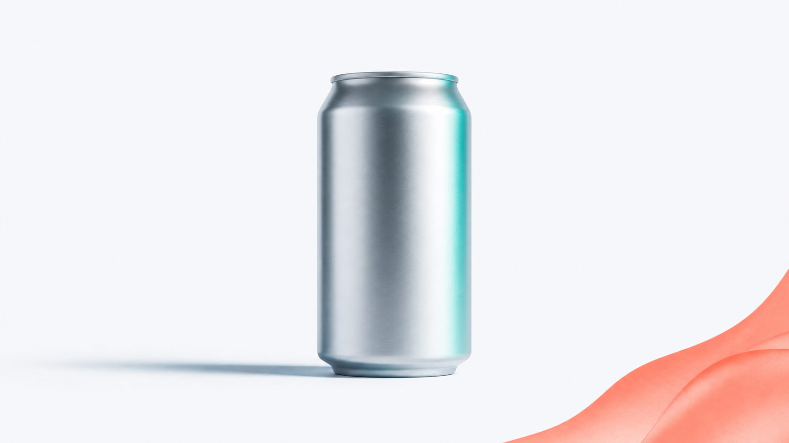
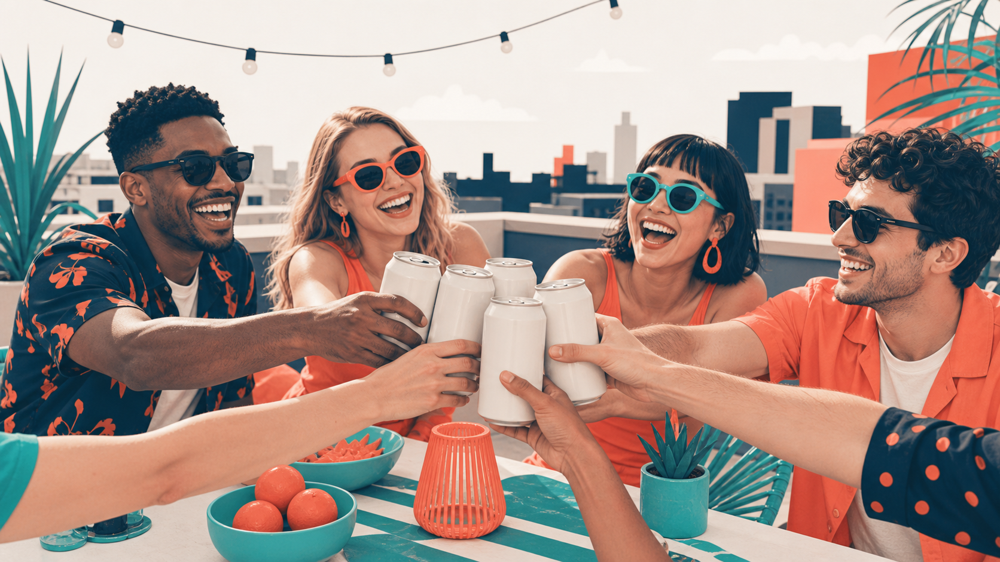
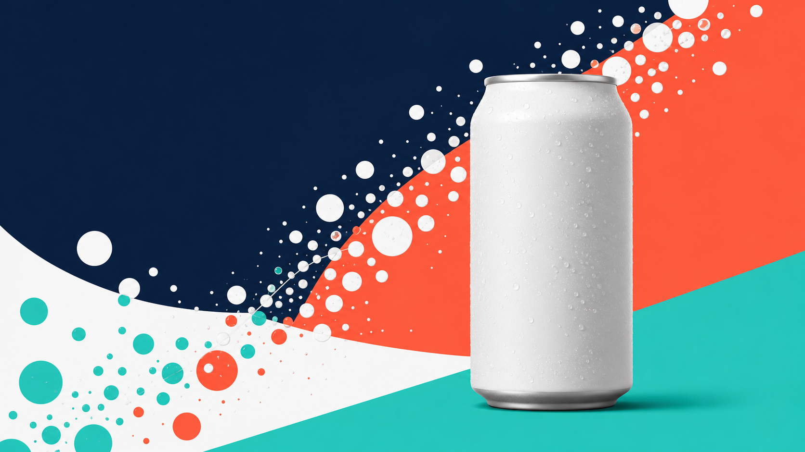

카피와 비주얼은 팀으로 뽑고, 아트디렉터가 검수한다 — 만드는 손과 보는 눈을 나누면 결과가 달라집니다.
0. 이 과정 한눈에
- 대상: 크리에이티브(카피/아트), 기획 실무자
- 소요: 150분
- 선수과정: C1 하네스 첫걸음
- 사용 하네스:
creative-harness(패턴: 생성-검증) - 얻어가는 것(산출물):
- 감성/기능/유머 3앵글 추천 카피 3세트
- 키비주얼 컨셉 4안
- 아트디렉터 검수 코멘트(통과·반려·재생성 지시)
- 무드보드 요약
- 재사용 가능한 나만의 크리에이티브 하네스
1. 왜 이 하네스인가
크리에이티브 회의를 떠올려 보세요. 카피라이터가 헤드라인을 여러 개 던지고, 디자이너가 시안을 몇 장 깔고, 아트디렉터가 "이건 톤이 안 맞아, 다시"라고 말합니다. 좋은 광고는 만드는 사람과 검수하는 사람이 나뉘어 있을 때 나옵니다. 혼자 만들고 혼자 "괜찮네" 하면, 자기 시안을 사랑하는 눈을 못 이깁니다.
혼자 AI에게 "카피랑 비주얼 뽑아줘"라고 하면 딱 그런 상황이 됩니다. 만든 결과를 만든 그 자리에서 스스로 칭찬하고 끝나 버립니다.
| 구분 | Before (혼자 뽑기) | After (크리에이티브 하네스) |
|---|---|---|
| 카피 | 한 방향 헤드라인 몇 개 | 감성·기능·유머 3앵글 × A/B로 비교 가능한 세트 |
| 비주얼 | 시안 1~2장, 톤 제각각 | 통일 팔레트로 4안 병렬 생성 |
| 검수 | 없음(자기만족) | 아트디렉터가 브랜드 톤 기준으로 통과·반려 |
| 품질 | 첫 결과에서 멈춤 | 반려→재생성 루프로 올라감 |
이 과정이 만드는 것은 "빨리 뽑아주는 기계"가 아니라 뽑고, 검수하고, 다시 뽑는 작은 크리에이티브 조직입니다.
2. 개념 이해 — 생성-검증
만드는 사람 ≠ 검수하는 사람
생성-검증은 팀을 두 손으로 나누는 방식입니다.
- 만드는 손(생성): 카피라이터, 비주얼 디자이너. 자유롭게 여러 안을 쏟아냅니다.
- 보는 눈(검증): 아트디렉터. 만든 사람과 다른 자리에서, 브랜드 기준으로만 봅니다.
핵심 규칙: 같은 맥락에서 자기 것을 자기가 검수하지 않습니다. 카피라이터가 "내 카피 좋죠?"라고 스스로 판정하면 검수가 아니라 자기변호가 됩니다. 그래서 검수는 반드시 별도 팀원(아트디렉터)에게 맡깁니다.
리뷰 게이트 — 통과 못하면 못 나간다
아트디렉터는 결과물 앞에 서 있는 문지기(리뷰 게이트) 입니다.
[카피라이터] ─┐
├─▶ [아트디렉터 리뷰 게이트] ─▶ 통과 → 최종 패키지
[비주얼 디자이너] ─┘ │
└─ 톤 위반 → 반려 · 재생성 지시 → 다시 생성
브랜드 톤에 맞으면 통과, 어긋나면 반려하고 재생성을 지시합니다. 이 "반려→재생성"이 한 바퀴 돌 때마다 품질이 올라갑니다.
codex-image 병렬 컨셉 생성
비주얼 디자이너는 키비주얼을 한 장씩 순서대로 그리지 않습니다. 여러 컨셉을 한 번에 나란히 만들어 냅니다(병렬 생성, 최대 4~5안). 청량한 해변 버전, 미니멀 제품샷 버전, 활기찬 라이프스타일 버전을 동시에 깔아 놓고 비교하는 것이죠. 컨셉이 여러 개여야 아트디렉터가 고르고 버릴 수 있습니다.
이미지 안에는 글자를 넣지 않습니다. AI가 그린 글자는 오탈자가 나기 쉬워서, 카피(글자)는 나중에 디자인 단계에서 얹습니다. 이미지는 "비주얼 무드"만 담당합니다.
카피 A/B — 같은 메시지, 다른 앵글
하나의 제품 메시지도 말을 거는 각도를 바꾸면 도달하는 사람이 달라집니다.
| 앵글 | 무엇을 건드리나 | 예시 톤 |
|---|---|---|
| 감성 | 기분·순간·감정 | "이 여름, 죄책감 없이 시원하게" |
| 기능 | 사실·이점·근거 | "설탕 0g, 칼로리 0, 청량함은 그대로" |
| 유머 | 위트·반전·공유 욕구 | "다이어트 중이라 물만 마신다는 거짓말" |
세 앵글을 다 뽑아 비교하는 것이 카피 A/B입니다. 광고주에게 하나만 보여주는 게 아니라, 서로 다른 문을 세 개 열어 보여 주는 셈입니다.
AI는 매번 조금씩 다르게 답합니다(비결정성). 같은 브리프를 두 번 넣어도 헤드라인 문구는 달라질 수 있습니다. 이건 고장이 아니라 정상입니다. 그래서 우리는 결과를 한 번은 의심하고 검수합니다 — 그 역할이 아트디렉터입니다.
3. 사용할 하네스 — creative-harness
팀 구성표
| 팀원(역할) | 광고팀 비유 | 하는 일 | 단계 |
|---|---|---|---|
| 카피라이터 | 카피라이터 | 감성/기능/유머 3앵글로 헤드라인·바디·CTA 창작 | 생성 |
| 비주얼 디자이너 | 디자이너 | 키비주얼 컨셉 4안 병렬 생성(codex-image) | 생성 |
| 아트디렉터 | 아트디렉터(검수) | 브랜드 톤 기준으로 검수·반려·재생성 지시 | 검증 |
- 팀장(오케스트레이터):
creative-harness. 카피라이터와 비주얼 디자이너를 동시에 생성으로 돌리고, 결과를 아트디렉터에게 넘겨 검수받습니다. 반려가 나오면 해당 팀원에게 재작업을 시킵니다. - 협업 방식: 생성(둘) → 검증(하나) → 반려 시 되돌림. 이것이 생성-검증 패턴입니다.
트리거 프롬프트 (복붙)
크리에이티브 제작 하네스를 구성해줘. 광고 카피를 감성/기능/유머 세 앵글로 뽑는 카피라이터, 키비주얼 컨셉을 여러 장 생성하는 비주얼 디자이너(codex-image 사용), 그리고 브랜드 톤앤매너 기준으로 결과를 검수하고 반려·재생성을 지시하는 아트디렉터가 필요해. 최종적으로 '추천 카피 3세트 + 키비주얼 컨셉 4안 + 아트디렉터 코멘트'를 줘.
이 한 문장에 도메인(크리에이티브 제작)·역할(카피/비주얼/아트디렉터)·산출물(카피 3세트+키비주얼 4안+코멘트) 3요소가 다 들어 있습니다. 하네스 요청문은 항상 이 3요소로 확인하세요.
4. 실습 — "제로톡" 여름 캠페인 크리에이티브
가상 브랜드 제로톡(제로 슈거 스파클링 음료)의 여름 캠페인 크리에이티브 패키지를 만듭니다.
4-1. 하네스 구성 (복붙)
크리에이티브 제작 하네스를 구성해줘. 광고 카피를 감성/기능/유머 세 앵글로 뽑는 카피라이터, 키비주얼 컨셉을 여러 장 생성하는 비주얼 디자이너(codex-image 사용), 그리고 브랜드 톤앤매너 기준으로 검수하고 반려·재생성을 지시하는 아트디렉터가 필요해. 최종적으로 '추천 카피 3세트 + 키비주얼 컨셉 4안 + 아트디렉터 코멘트'를 줘.
4-2. 브리프·브랜드 톤 입력 (복붙)
브랜드: 제로톡 (제로 슈거 스파클링 음료)
캠페인: 여름 시즌, 20~30대 타깃
핵심 메시지: 설탕 0g인데 청량함은 진짜 — 죄책감 없이 시원하게
브랜드 톤앤매너: 젊고 위트있게, 상쾌하고 솔직하게. 과장·의학적 효능 주장 금지, 다이어트 압박 조장 금지.
카피는 감성/기능/유머 3앵글로, 각 앵글마다 헤드라인 + 바디 + CTA. 키비주얼은 서로 다른 컨셉 4안으로.
4-3. 단계 표
| 단계 | 무엇을 하나 | 누가 | 기대 결과 |
|---|---|---|---|
| 1 | 하네스 구성 | 팀장 | 카피/비주얼/아트디렉터 3인 팀 확인 |
| 2 | 브리프·톤 입력 | 나 | 브랜드 톤이 검수 기준으로 등록됨 |
| 3 | 카피 3앵글 생성 | 카피라이터 | 감성/기능/유머 헤드라인+바디+CTA 초안 |
| 4 | 키비주얼 4안 병렬 생성 | 비주얼 디자이너 | 서로 다른 컨셉 4안(텍스트 없는 이미지) |
| 5 | 톤 검수 | 아트디렉터 | 통과/반려 판정 + 반려 사유 |
| 6 | 반려분 재생성 | 카피/비주얼 | 지적받은 안만 다시 생성(생성-검증 루프) |
| 7 | 패키지 확정 | 팀장 | 추천 카피 3세트 + 키비주얼 4안 + 무드보드 |
4-4. 재생성(반려) 시켜 보기 (복붙)
첫 결과가 나오면 일부러 반려 루프를 한 번 돌려 봅니다. 생성-검증의 진짜 가치는 여기서 나옵니다.
아트디렉터 기준으로 유머 앵글 헤드라인이 '다이어트 압박'으로 읽힐 위험이 있으면 반려하고, 압박 대신 위트로 웃게 만드는 방향으로 다시 뽑아줘. 통과한 감성·기능 앵글은 그대로 둬.
통과한 안은 두고 반려된 안만 다시 뽑는 것이 핵심입니다. 매번 전부 새로 뽑으면 힘들게 통과시킨 안까지 날아갑니다.
5. 완성형 사례 — "제로톡" 여름 캠페인 크리에이티브 패키지
실제로 이 하네스를 돌렸을 때 나올 법한 결과물 전문은 아래 파일에 있습니다.
➡ C3 크리에이티브 패키지 전문 보기 (가상 브랜드·예시 데이터)
추천 카피 3세트 (발췌)
| 앵글 | 헤드라인 |
|---|---|
| 감성 | 이 여름, 죄책감은 두고 시원함만 챙기세요 |
| 기능 | 설탕 0g. 칼로리 0. 청량함은 100%. |
| 유머 | "물만 마셔요"… 라고 말하며 몰래 여는 캔 |
각 세트의 바디카피·CTA·검수 결과는 사례 파일 5장에서 확인하세요.
키비주얼 컨셉 4안
아래 4안은 아트디렉터 검수를 통과한 최종 컨셉입니다. (이미지는 별도 생성 예정 — 컨셉·무드는 사례 파일 참조)
키비주얼 1안 — 청량 여름 해변 1안 · 청량/여름해변: 코발트빛 바다와 튀는 물방울, 코럴 포인트. 시원함을 몸으로 느끼게 하는 감성 컷.

키비주얼 2안 — 미니멀 제품샷 2안 · 미니멀 제품샷: 오프화이트 배경 위 캔 하나, 절제된 그림자와 티일 하이라이트. "설탕 0"의 깔끔함을 시각화.
키비주얼 3안 — 활기찬 라이프스타일 3안 · 활기찬 라이프스타일: 옥상 파티, 웃는 사람들의 손에 든 캔. 공유하고 싶은 여름 순간.
키비주얼 4안 — 대담한 그래픽 4안 · 대담한 그래픽: 네이비·코럴·티일의 큰 색면과 탄산 버블 패턴. SNS 썸네일에서 눈에 꽂히는 컷.아트디렉터 검수 한 줄
"감성·기능 앵글 통과. 유머 앵글은 초안이 '다이어트 압박'으로 읽혀 1회 반려 후 재생성 → 통과. 키비주얼 4안은 팔레트 통일 확인, 2안 그림자만 톤 다운 지시." — 생성-검증 루프가 실제로 한 바퀴 돈 기록입니다.
6. 자주 하는 실수
| 실수 | 이렇게 하세요 |
|---|---|
| 검수 기준(브랜드 톤)을 안 주고 "검수해줘"라고만 함 → 리뷰가 무의미 | 톤앤매너를 먼저 문장으로 적어 아트디렉터에게 기준으로 넣기 |
| 이미지 프롬프트에 "제로톡 로고/글자 넣어줘" 요구 → 오탈자 이미지 | 이미지엔 텍스트 배제, 글자는 디자인 단계에서 따로 얹기 |
| 첫 결과가 예뻐서 바로 확정(재생성 루프 생략) | 일부러 한 번은 반려시켜 생성-검증의 가치를 체험 |
| 반려 시 전체를 다시 뽑음 → 통과안까지 사라짐 | 반려된 안만 재생성, 통과안은 유지 지시 |
7. 체크리스트 & 자기평가
완주 체크
루브릭 요약 (통과 70%)
| 항목 | 비중 | 우수 기준 |
|---|---|---|
| 생성-검증 루프 | 30% | 리뷰 게이트 작동, 반려·재생성 활용 |
| 브랜드 톤 기준화 | 25% | 검증 기준을 문장으로 명문화 |
| 비주얼 컨셉 | 25% | 컨셉 다양성·팔레트 적합성 |
| 카피 A/B | 20% | 3앵글 구분·완성도 |
8. 다음 과정
카피와 비주얼을 팀으로 뽑고 검수까지 마쳤다면, 이제 이 크리에이티브를 어디에 얼마의 예산으로 태울지를 정할 차례입니다. C4에서는 감독자 패턴으로 미디어 플랜을 지휘합니다.
- 이전: C2 리서치·인사이트 하네스 (팬아웃/팬인)
- 다음: C4 미디어·캠페인 플래닝 하네스 (감독자)